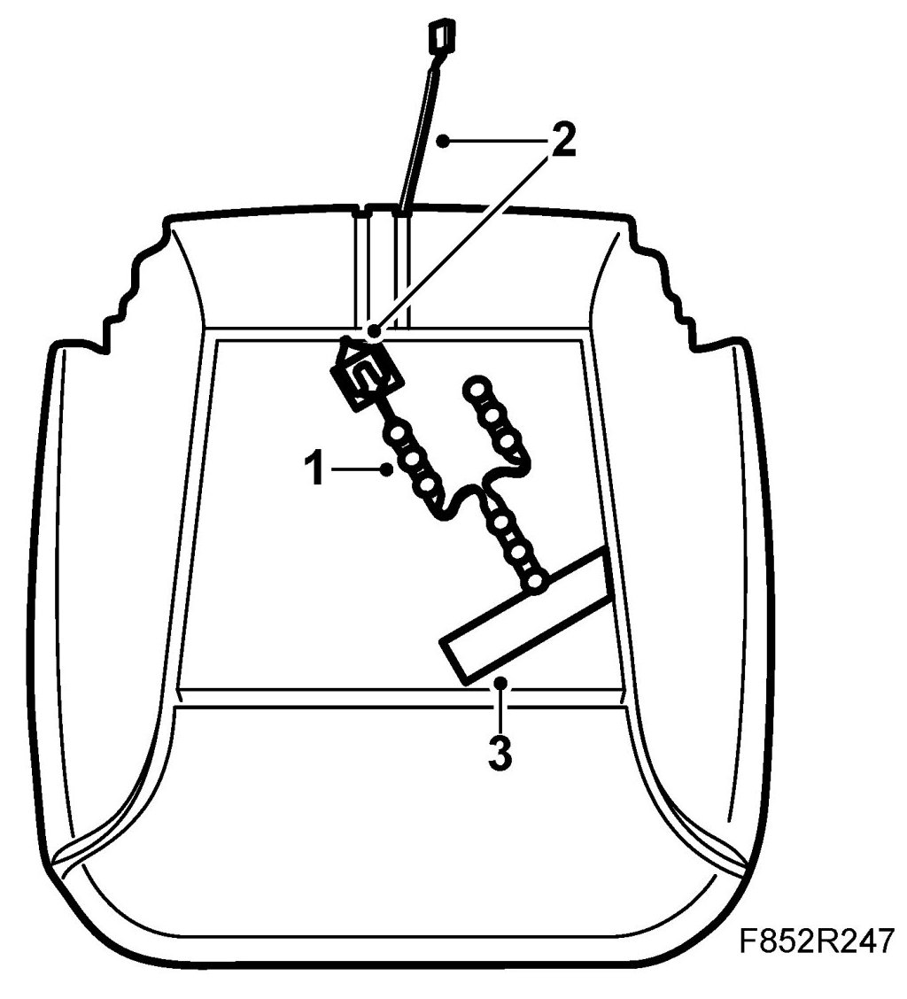

Seat Occupant Sensor: Service and Repair
Sensor, Occupied Seat Cushion, Passenger, Front, CV
To remove
1. Remove the passenger seat and upholstery.
2. Remove the tape from the padding. Ensure that no bits of padding come loose.
3. Pull the wire out of the padding.
4. Remove the sensor.
To fit
1. Fit the sensor into position. The sensor must be fitted on the diagonal.

2. Thread the wire through the opening in the padding.
3. Tape the sensor to the seat cushion.
4. Fit the seat cushion, upholstery and seat.